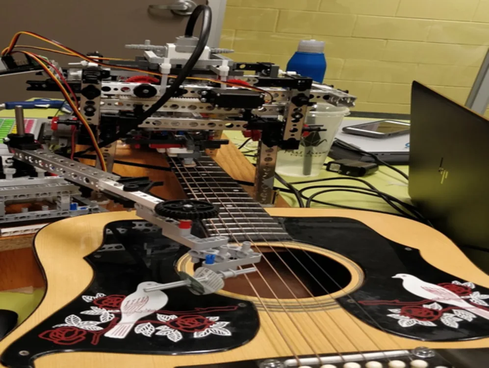

Learning from feedback
Use feedback from completed work to improve how the system handles future runs.
Danial Mohazab Senior Software Engineer at Augment
I work on feedback loops and data accuracy so agentic systems can self-correct on future runs. I also work to reduce the cost and latency of AI usage.
Based in Toronto, Canada University of Waterloo
01 / Augment
At Augment, I work on agentic systems that use feedback to improve future runs, and on reducing the cost and latency of their AI usage.
Use feedback from completed work to improve how the system handles future runs.
Improve data accuracy so the system can identify errors and correct them in later runs.
Make AI usage faster and less expensive across the system.
02 / Earlier work
Earlier work in accessibility, embedded software, and robotics.
Gesture recognition Embedded translation
An American Sign Language translation device concept. The project explored ASL data collection and embedded translation to make service interactions more accessible.
Explore the repositoryLow-level software Scheduling
A real-time operating system built in C for the NXP LPC1768 microcontroller and Cortex-M3 processor, using fixed-priority preemptive scheduling.
Explore the repository
Robot-C-Major · prototypeRobotics Physical computing
A guitar-playing robot combining EV3, TETRIX, and NXT components. Its control code coordinates the mechanism to automate guitar playing.
Explore the repository03 / About
I studied mechatronics engineering at the University of Waterloo and built earlier projects in embedded software and robotics. That background informs how I work on feedback, accuracy, and performance in software today.
University of Waterloo · Mechatronics Engineering04 / Connect
Interested in my work? Reach me on LinkedIn.